abstract
In this paper we are going to explore the number of Auto Theft cases for each Toronto Neighbourhood from 2014 to 2019. To see if there is any neighbourhood which is unusual. Has the number of Auto Theft cases been varied a lot among years?
Intoduction
In a modern city like Toronto, Auto theft always exist. As the number of auto mobile vechicles increase, people’s methods of preventing the theft are also more ane more advanced. In this paper, we will auto theft problem between 2014 to 2019 using the data about the number of Auto theft in each neighbourhood during this time period. The main finds include that most of the neighbourhoods in Toronto had no more than 50 Auto Theft cases during 2014 to 2019. There were always 5 to 6 neighbourhoods with serious auto theft issues with around 100 cases, or even more than 300. West Humber-Clairville was a neighbourhood whose problem was extremely serious, and even worse in 2019.
In this paper, I choose the data from open data Toronto. The original data set is about the Neighbourhood crime rate of different categories of crime between 2014 and 2019. I draw histograms for each year’s Auto theft counts to see the distribution and boxplots to see the centre, spread and outliers. Both the histograms and the boxplots are very similar between years. Also, there isn’t much distinction on the median and spread, as well. Therefore, the number of auto theft in each Toronto neighbourhoods hasn’t changed much between years. For the neighbourhood which has an extremely high number of auto theft , I have searched for the online resource that it is a place with large number of theft. And the data shows that it still suffers from the problem.
The paper first includes original data along with a description. The following are graphs including 6 histograms and 6 boxplots. The discussion and reference are under the graphs. Since the data shows that the number of auto theft in Toronto neighbourhoods hasn’t changed much, it may indicate that there is some actions needed in the future to mitigate the issue. This analyze also has limitation and weakness. Since the data ends by 2019, it is not accurate to say that the situation now is still align with the situation reflected from the data. If we want it to be more accurate, we still need to collect the data in the future and do the same analyze to compare.
Description of dataset
Background:
This dataset is about the neighbourhood crime data from 2014 to 2019. It includes the number of auto theft, assault, robbery, homicide, theft over and break and enter for each year. Also, based on the 2016 Census population, it includes five year averages and neighbourhood crime rates per 100,000 people.
Description of variables:
_id: unique row identifier(int) OBJECTID: Autogenerated distinct record identifier(int)
Neighbourhood: name of Toronto neighbourhood (chr)
Hood_ID: Toronto neighbourhood identifier (chr)
Population: 2016 Census population (int)
Assault_2014~Assault_2019: Count of assaults for 2014-2019(int)
Assault_AVG: Average Assaults from 2014 - 2019 (dbl)
Assault_CHG: Percantage change in assaults from 2018-2019(dbl)
Assault_Rate_2019: Rate of assaults for 2019 per 100,000 population (dbl)
AutoTheft_2014~AutoTheft_2019: Count of auto thefts for 2014 to 2019(int)
AutoTheft_AVG:Average auto thefts from 2014-2019 (dbl)
AutoTheft_CHG: Percentage Change in auto thefts from 2018-2019(dbl)
AutoTheft_Rate_2019: Rate of auto thefts for 2019 per 100,000 population(dbl)
BreakandEnter_2014~BreakandEnter_2019: Count of break and enters for 2014 to 2019 (int)
BreakandEnter_AVG: Average break and enters from 2014-2019 (dbl) BreakandEnter_CHG: percentage Change in break and enters from 2018-2019 (dbl)
BreakandEnter_Rate_2019: Rate of break and enters for 2019 per 100,000 population (dbl)
Homicide_2014~Homicide_2019: Count of homicides for 2014 to 2019 (int)
Robbery_AVG: Average robberies from 2014-2019 (dbl)
Robbery_CHG: percentage Change in robberies from 2018-2019 (dbl)
Robbery_Rate_2019: Rate of robberies for 2019 per 100,000 population (dbl)
TheftOver_2014~TheftOver_2019: Count of thefts over for 2014 to 2019 (int)
TheftOver_AVG: Average thefts over from 2014-2019 (dbl)
TheftOver_CHG: Percentage Change in thefts over from 2018-2019(dbl)
TheftOver_Rate_2019: Rate of thefts over for 2019 per 100,000 population (dbl)
Shape__Area: Autogenerated area measurement (dbl)
Shape__Length: Autogenerated length measurement (dbl)
Category of data
## Rows: 140
## Columns: 62
## $ `_id` <int> 1, 2, 3, 4, 5, 6, 7, 8, 9, 10, 11, 12, 13, 14…
## $ OBJECTID <int> 16, 17, 18, 19, 20, 21, 22, 23, 24, 25, 26, 2…
## $ Neighbourhood <chr> "South Parkdale", "South Riverdale", "St.Andr…
## $ Hood_ID <chr> "085", "070", "040", "061", "021", "022", "13…
## $ Population <int> 21849, 27876, 17812, 15683, 12416, 15545, 133…
## $ Assault_2014 <int> 202, 215, 53, 127, 76, 117, 50, 480, 247, 79,…
## $ Assault_2015 <int> 226, 207, 41, 92, 89, 132, 39, 495, 259, 97, …
## $ Assault_2016 <int> 231, 236, 48, 97, 118, 114, 48, 543, 244, 106…
## $ Assault_2017 <int> 229, 243, 45, 107, 116, 157, 48, 694, 243, 11…
## $ Assault_2018 <int> 220, 304, 55, 123, 109, 119, 46, 766, 288, 13…
## $ Assault_2019 <int> 251, 261, 58, 122, 118, 161, 48, 879, 282, 13…
## $ Assault_AVG <dbl> 226.5, 244.3, 50.0, 111.3, 104.3, 133.3, 46.5…
## $ Assault_CHG <dbl> 0.14, -0.14, 0.05, -0.01, 0.08, 0.35, 0.04, 0…
## $ Assault_Rate_2019 <dbl> 1148.8, 936.3, 325.6, 777.9, 950.4, 1035.7, 3…
## $ AutoTheft_2014 <int> 13, 18, 15, 11, 66, 36, 8, 31, 42, 17, 8, 14,…
## $ AutoTheft_2015 <int> 20, 23, 25, 9, 42, 33, 7, 24, 29, 12, 7, 9, 1…
## $ AutoTheft_2016 <int> 23, 27, 10, 7, 62, 45, 5, 23, 44, 10, 4, 7, 5…
## $ AutoTheft_2017 <int> 19, 37, 15, 5, 83, 58, 8, 27, 40, 18, 12, 12,…
## $ AutoTheft_2018 <int> 17, 40, 21, 12, 106, 56, 10, 68, 46, 23, 8, 1…
## $ AutoTheft_2019 <int> 20, 40, 35, 12, 135, 68, 19, 54, 66, 19, 8, 1…
## $ AutoTheft_AVG <dbl> 18.7, 30.8, 20.2, 9.3, 82.3, 49.3, 9.5, 37.8,…
## $ AutoTheft_CHG <dbl> 0.18, 0.00, 0.67, 0.00, 0.27, 0.21, 0.90, -0.…
## $ AutoTheft_Rate_2019 <dbl> 91.5, 143.5, 196.5, 76.5, 1087.3, 437.4, 142.…
## $ BreakandEnter_2014 <int> 45, 89, 81, 31, 54, 35, 13, 141, 130, 41, 50,…
## $ BreakandEnter_2015 <int> 51, 98, 79, 71, 44, 35, 15, 152, 116, 58, 20,…
## $ BreakandEnter_2016 <int> 71, 148, 57, 43, 41, 24, 19, 145, 86, 57, 14,…
## $ BreakandEnter_2017 <int> 58, 94, 91, 27, 40, 21, 23, 199, 103, 36, 12,…
## $ BreakandEnter_2018 <int> 78, 91, 81, 41, 56, 44, 16, 191, 65, 51, 14, …
## $ BreakandEnter_2019 <int> 89, 133, 83, 63, 57, 61, 29, 303, 65, 46, 16,…
## $ BreakandEnter_AVG <dbl> 65.3, 108.8, 78.7, 46.0, 48.7, 36.7, 19.2, 18…
## $ BreakandEnter_CHG <dbl> 0.14, 0.46, 0.02, 0.54, 0.02, 0.39, 0.81, 0.5…
## $ BreakandEnter_Rate_2019 <dbl> 407.3, 477.1, 466.0, 401.7, 459.1, 392.4, 217…
## $ Homicide_2014 <int> 0, 1, 1, 0, 0, 0, 0, 1, 0, 0, 1, 0, 0, 1, 0, …
## $ Homicide_2015 <int> 0, 0, 0, 1, 1, 0, 0, 4, 2, 1, 0, 1, 0, 0, 0, …
## $ Homicide_2016 <int> 1, 3, 0, 1, 0, 1, 0, 3, 1, 0, 0, 0, 0, 0, 0, …
## $ Homicide_2017 <int> 0, 5, 2, 1, 2, 1, 1, 1, 0, 0, 0, 0, 0, 0, 1, …
## $ Homicide_2018 <int> 0, 2, 0, 0, 1, 0, 1, 2, 3, 1, 0, 0, 0, 0, 1, …
## $ Homicide_2019 <int> 1, 0, 0, 1, 3, 0, 0, 1, 1, 0, 0, 0, 0, 0, 0, …
## $ Homicide_AVG <dbl> 0.3, 1.8, 0.5, 0.7, 1.2, 0.3, 0.3, 2.0, 1.2, …
## $ Homicide_CHG <dbl> 1.00, -1.00, 0.00, 1.00, 2.00, 0.00, -1.00, -…
## $ Homicide_Rate_2019 <dbl> 4.6, 0.0, 0.0, 6.4, 24.2, 0.0, 0.0, 3.2, 3.7,…
## $ Robbery_2014 <int> 24, 64, 8, 24, 22, 28, 10, 122, 40, 28, 25, 1…
## $ Robbery_2015 <int> 35, 42, 5, 37, 23, 27, 4, 128, 44, 22, 22, 17…
## $ Robbery_2016 <int> 41, 49, 14, 16, 23, 24, 13, 114, 46, 24, 24, …
## $ Robbery_2017 <int> 30, 64, 0, 20, 27, 34, 11, 138, 51, 30, 20, 3…
## $ Robbery_2018 <int> 35, 40, 4, 16, 31, 29, 6, 169, 28, 14, 16, 21…
## $ Robbery_2019 <int> 33, 35, 12, 13, 28, 27, 1, 143, 37, 25, 13, 2…
## $ Robbery_AVG <dbl> 33.0, 49.0, 7.2, 21.0, 25.7, 28.2, 7.5, 135.7…
## $ Robbery_CHG <dbl> -0.06, -0.13, 2.00, -0.19, -0.10, -0.07, -0.8…
## $ Robbery_Rate_2019 <dbl> 151.0, 125.6, 67.4, 82.9, 225.5, 173.7, 7.5, …
## $ TheftOver_2014 <int> 6, 18, 10, 4, 15, 1, 1, 32, 4, 4, 9, 2, 1, 4,…
## $ TheftOver_2015 <int> 4, 16, 14, 3, 16, 9, 1, 16, 15, 5, 3, 4, 5, 2…
## $ TheftOver_2016 <int> 9, 22, 8, 5, 18, 1, 1, 40, 18, 3, 3, 2, 4, 4,…
## $ TheftOver_2017 <int> 10, 27, 7, 2, 18, 7, 4, 30, 7, 7, 4, 3, 1, 8,…
## $ TheftOver_2018 <int> 9, 24, 6, 4, 15, 10, 2, 43, 12, 3, 1, 5, 1, 6…
## $ TheftOver_2019 <int> 22, 21, 6, 3, 22, 8, 3, 42, 14, 3, 3, 6, 2, 8…
## $ TheftOver_AVG <dbl> 10.0, 21.3, 8.5, 3.5, 17.3, 6.0, 2.0, 33.8, 1…
## $ TheftOver_CHG <dbl> 1.44, -0.13, 0.00, -0.25, 0.47, -0.20, 0.50, …
## $ TheftOver_Rate_2019 <dbl> 100.7, 75.3, 33.7, 19.1, 177.2, 51.5, 22.5, 1…
## $ Shape__Area <dbl> 2286974, 10964574, 7299580, 1062970, 7966905,…
## $ Shape__Length <dbl> 10802.832, 43080.725, 13025.997, 5940.700, 12…
## $ geometry <POLYGON [°]> POLYGON ((-79.42774 43.6297..., POLYG…Find something interesting with graphs
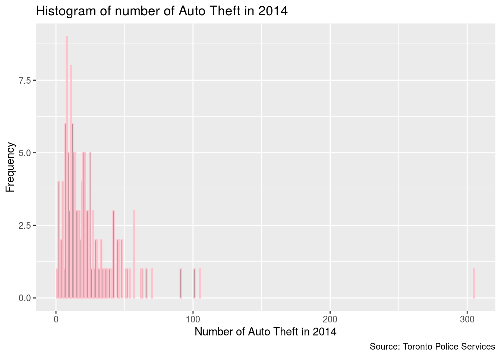
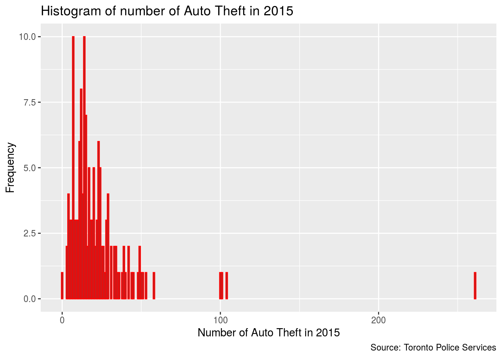
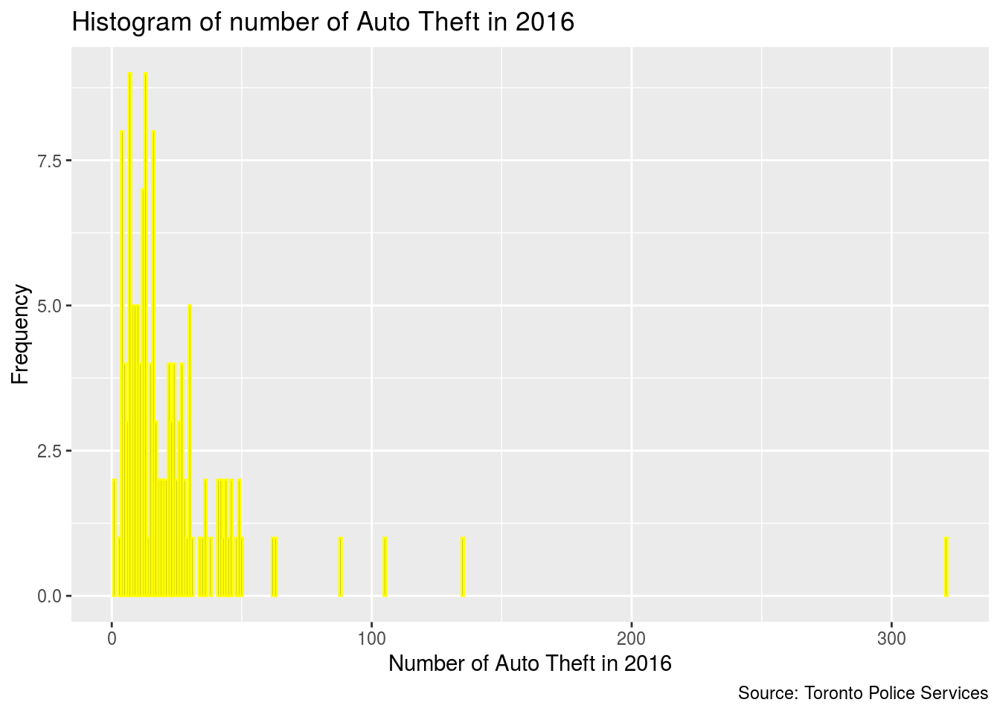
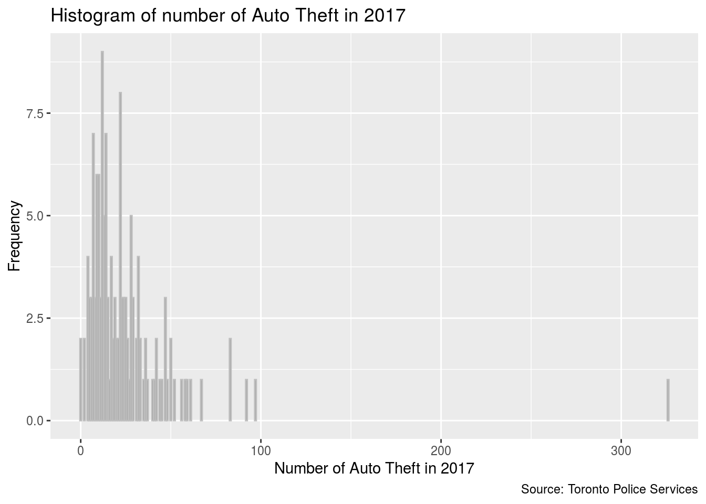
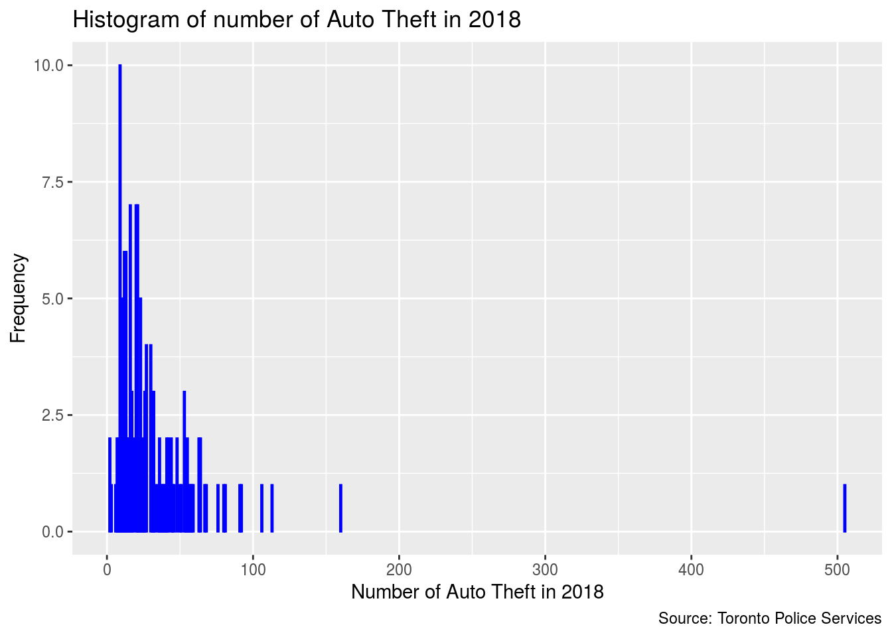
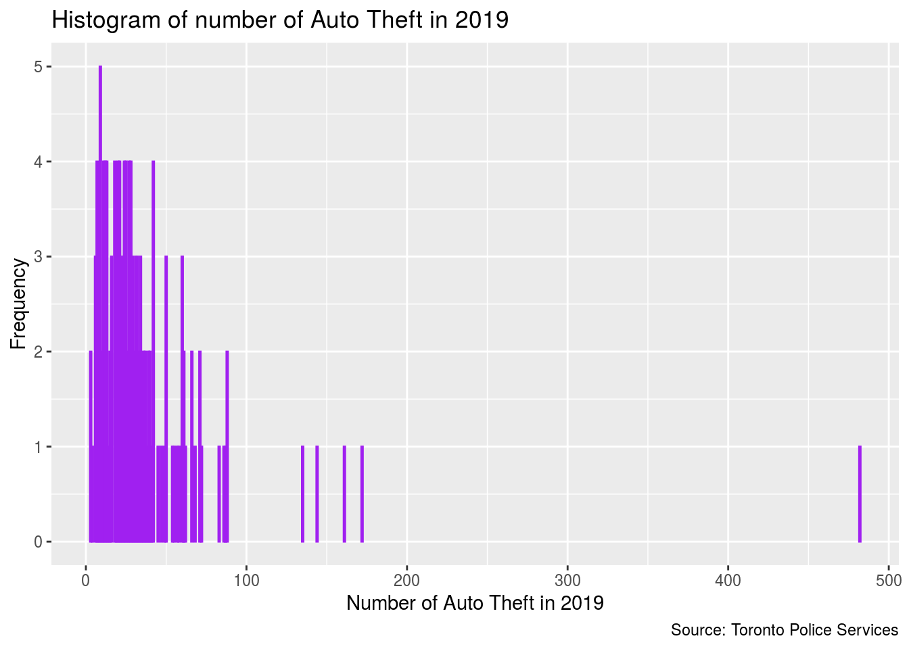
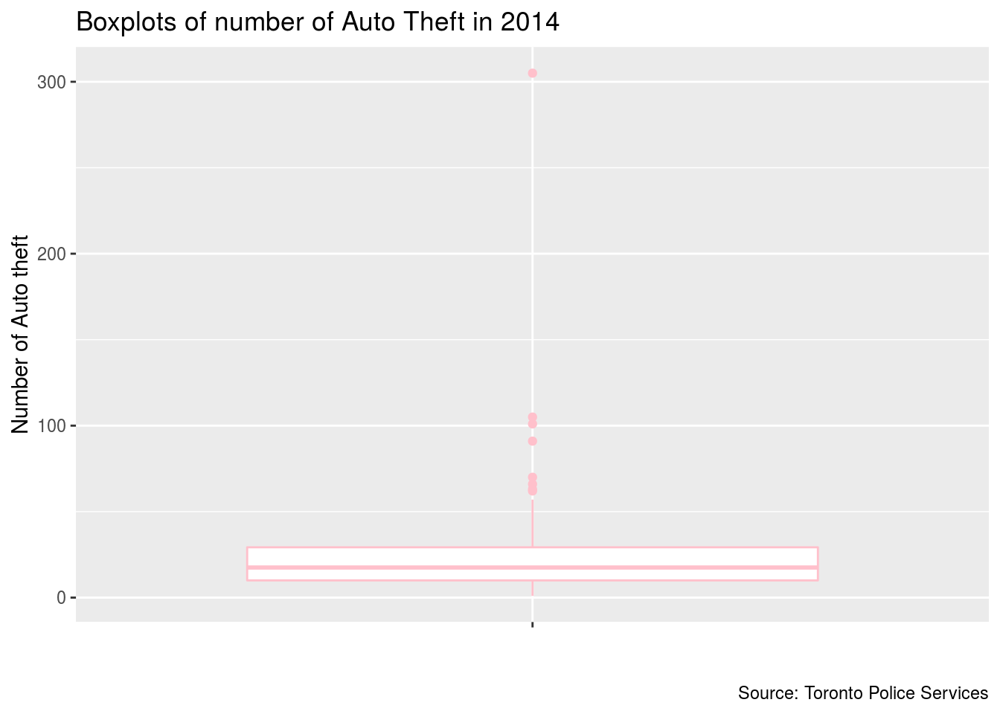
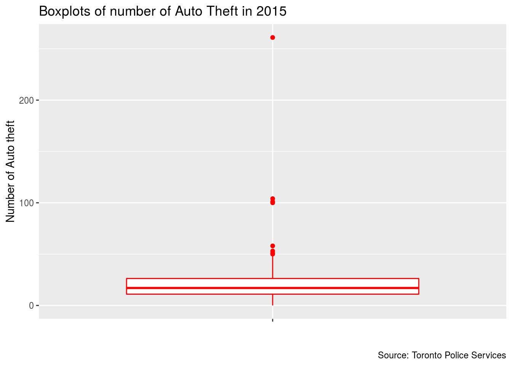
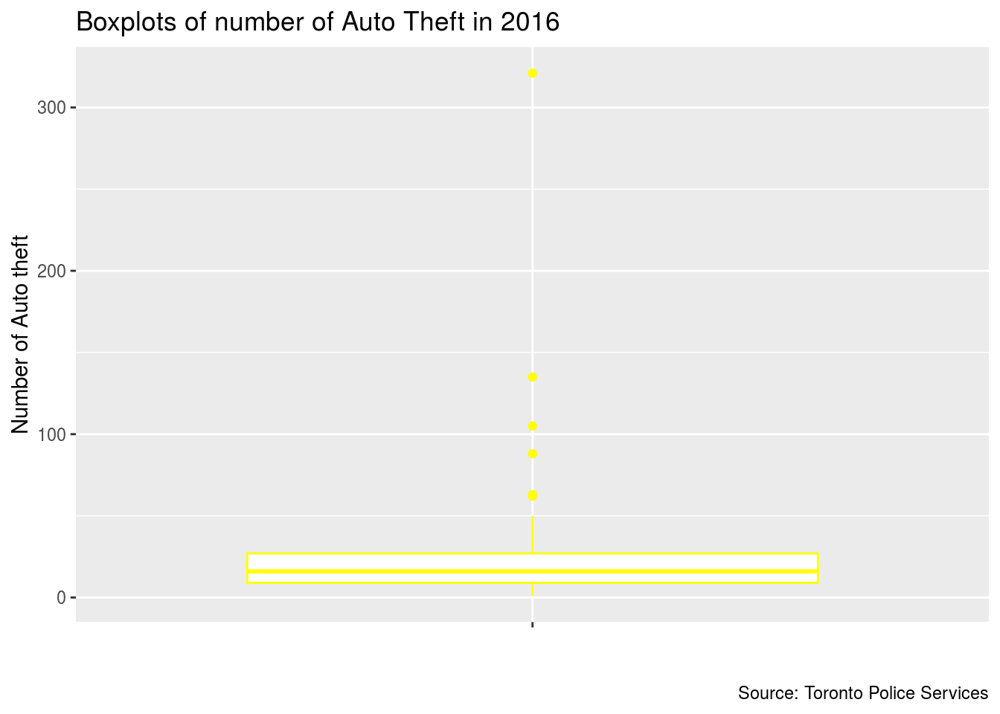
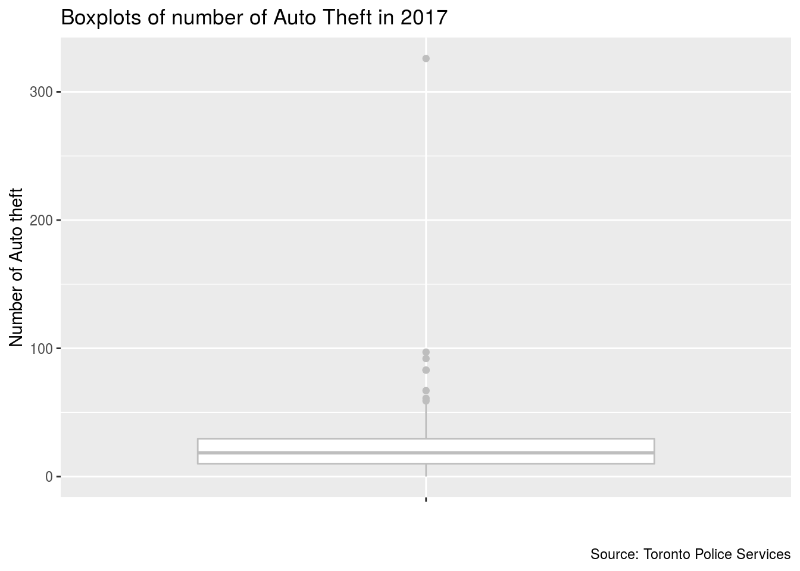
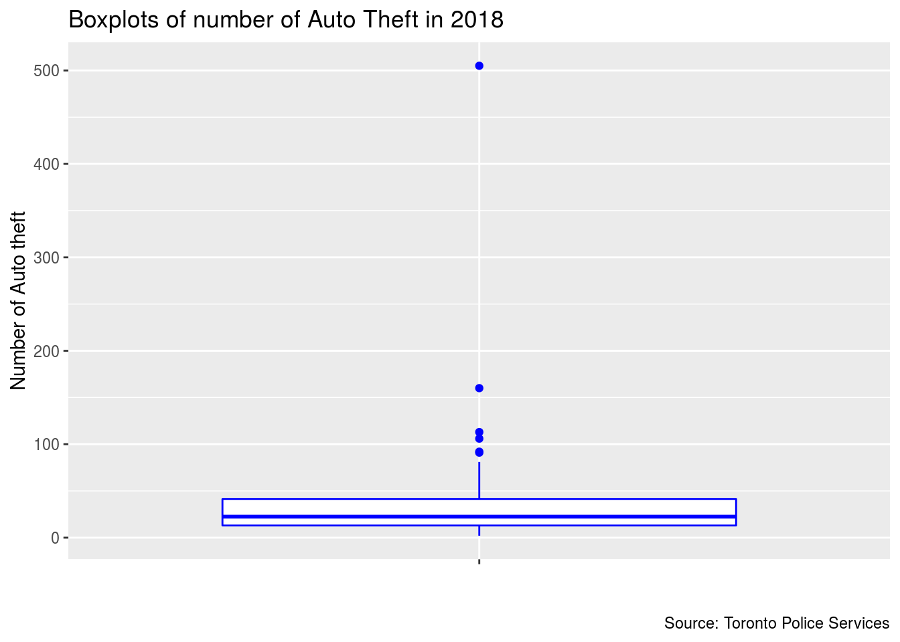
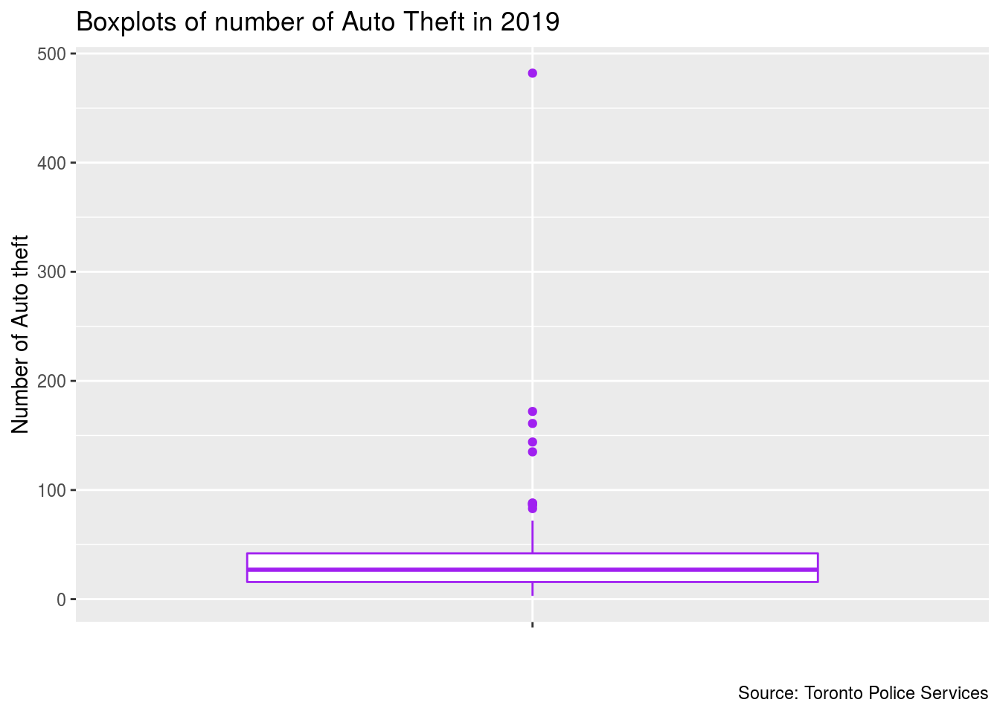
Discussion of graphs and findings
In this assignment, I mainly focus on exploring the situation of AutoTheft in Toronto Neighbourhood from 2014 to 2019.
Firstly, I draw a histogram of the number of Auto Theft for each year. The distributions of the number of Auto Theft for each year from 2014 to 2019 are very similar. It shows a skewness to the right. The maximum frequency often falls around 10 to 15. For year of 2015 and 2016, the shape of distribution come to be bimodal, the maximum frequency also falls around 20 to 25 except for the one we have mentioned. From the right side of each histograms, we can also see some data that could be outliers, which show extremely high quantity of auto thefts. In 2017, the number of neighbourhoods with more than 100 Auto Theft cases is 1, which is the least. In 2019, there are 5 neighbourhoods with more than 100 auto thefts, which is the most. For each year, there is a neighbourhood called West humber-clairville having around 300 AutoTheft cases, even close to 500 in 2019.
Secondly, we put each year’s Toronto neighbourhood auto theft data into boxplots to see the centre, spread and outliers.The shapes of boxplots for each year are not so much different. All of their median are around 20 per year. 75% of data are below 50 per year, which is very concentrated. Also, for each year the IQR is about 30, not very large. Each year, there will be 5 to 6 upper outliers while there isn’t any outliers below.
Overall, except for the fluctuation of outliers, the centre, spread and the number of outliers of Auto Theft in Toronto Neighbourhoods has been relativley steady from 2014 to 2019. The Auto Theft problem is not very serious for most neighbourhoods. While for neighbourhoods with serious Auto Theft problem, the situation has not been mitigated, yet.